Corsi di pittura e disegno a Torino e dintorni
Corsi e workshop di pittura, acquerello, disegno, illustrazione, fumetto e collage a Torino, Cuneo e dintorni.
Cerca tutti i workshop57 attività in programma · aggiornato il 23 novembre 2026
- dom8novPitturaWorkshop di acquerello: galassie e aureoleda domenica 8 novembre a domenica 29 novembre, 10:00–12:30Vanchiglia (TO)con Yanañagui per Libreria Sur
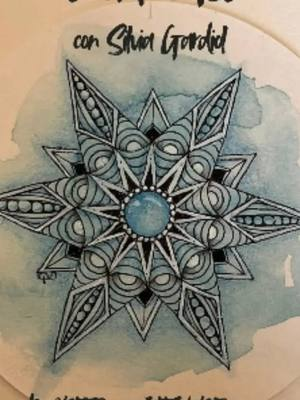
dal27ottPitturaZentangle: disegno per restare nel presenteda martedì 27 ottobre a martedì 8 dicembre, ogni 15 giorni, 17:30–19:00Pinerolo (TO) · Offerta liberacon Silvia Gardiol per 39/ Tramediffuse dal3novPitturaArcheologie del divenire: arteterapiada martedì 3 novembre a mercoledì 16 giugno, 20:30San Salvario (TO) · Gratiscon Isabella Sartoris per Antro
dal3novPitturaArcheologie del divenire: arteterapiada martedì 3 novembre a mercoledì 16 giugno, 20:30San Salvario (TO) · Gratiscon Isabella Sartoris per Antro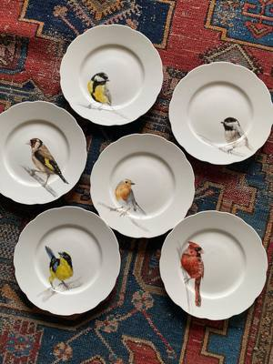
gio26novPitturaWorkshop di pittura: creature su porcellanagiovedì 26 novembre, 18:00Centro (TO) · 60 €con Benedetta Faravelli per Quadratino- ven27novPitturaDal segno alla parola: musica, pittura e poesiavenerdì 27 novembre, 17:30Mirafiori (TO) · Gratiscon Elena Giannuzzo e Norman Sgrò per Casa nel Parco
 ven27novPitturaIllustriamo Torino: scorci ad acquerellovenerdì 27 novembre, 18:00–20:00Torinocon Barbara Sirtoli
ven27novPitturaIllustriamo Torino: scorci ad acquerellovenerdì 27 novembre, 18:00–20:00Torinocon Barbara Sirtoli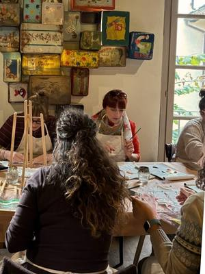
sab28novPitturaAperitivo Artistico: tela per studentisabato 28 novembreBiella (BI) · 27 €con Aperitivo Artistico dal14novPer famiglieIl viaggio di Lumi: le emozioni per bambinida sabato 14 novembre a sabato 12 dicembre, ogni sabato, 10:00–11:30Pinerolo (TO) · 100 €con Le Arti di Marti con Emanuela Busso
dal14novPer famiglieIl viaggio di Lumi: le emozioni per bambinida sabato 14 novembre a sabato 12 dicembre, ogni sabato, 10:00–11:30Pinerolo (TO) · 100 €con Le Arti di Marti con Emanuela Busso sab28novPitturaCrea il tuo mandala natalizio: dot artsabato 28 novembre, 14:00–17:30Druento (TO) · 40 €con Alma Mandala per Ki Daimon
sab28novPitturaCrea il tuo mandala natalizio: dot artsabato 28 novembre, 14:00–17:30Druento (TO) · 40 €con Alma Mandala per Ki Daimon- sab28novPitturaLaboratorio di acquerello: soggetti botanicisabato 28 novembre, 15:00–18:00Venaria Reale (TO)con Curtis Sheeran
 dal14novPitturaLaboratorio creativo: pittura, disegno e ricicloda sabato 14 novembre a sabato 19 dicembre, ogni sabato, 15:00–17:00Alba (CN) · Gratiscon Marta e Maria ODV
dal14novPitturaLaboratorio creativo: pittura, disegno e ricicloda sabato 14 novembre a sabato 19 dicembre, ogni sabato, 15:00–17:00Alba (CN) · Gratiscon Marta e Maria ODV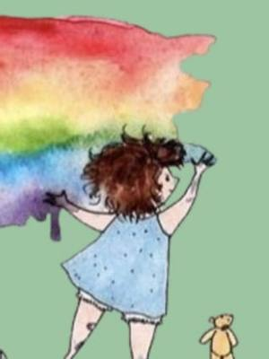
lun30novPitturaColori di me: incontro di arteterapialunedì 30 novembre, 20:00Borgaro Torinese (TO) · Gratiscon Giulia Candido per Nikin House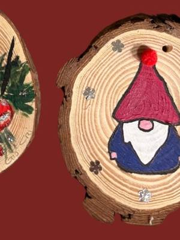
mar1dicPitturaAperitivo Artistico: pallina di Natale in legnomartedì 1 dicembre, 19:00–21:30Biella (BI)con Aperitivo Artistico per La Torteria Bistrò mer2dicPitturaMani: animazione «quadri in movimento»mercoledì 2 dicembre, 17:00–19:00Vanchiglietta (TO)con Nie Dala per Bocciofila Vanchiglietta
mer2dicPitturaMani: animazione «quadri in movimento»mercoledì 2 dicembre, 17:00–19:00Vanchiglietta (TO)con Nie Dala per Bocciofila Vanchiglietta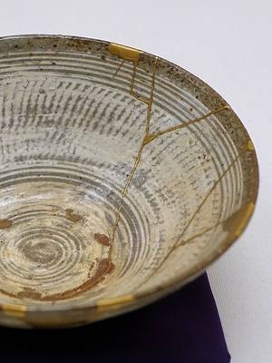
gio3dicPitturaIl Cervello Poeta: riparare con l’orogiovedì 3 dicembre, 18:30–20:30San Donato (TO) · 30 €con Psicolab per La Falegnameria- ven4dicPitturaBiglietti d’auguri: cartoline ad acquerellovenerdì 4 dicembre, 17:00–19:00Centro (TO) · 40 €con Barbara Sirtoli
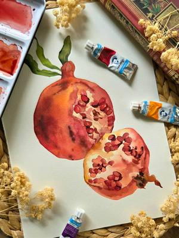
sab5dicPitturaWorkshop di acquerello: il melogranosabato 5 dicembre, 10:00–13:00San Salvario (TO) · 65 €con Jasmine Watercolors sab5dicPitturaWorkshop di Natale: palline dipintesabato 5 dicembre, 15:00–17:00Borgo Po (TO) · da 15 €con Si per TObed
sab5dicPitturaWorkshop di Natale: palline dipintesabato 5 dicembre, 15:00–17:00Borgo Po (TO) · da 15 €con Si per TObed sab5dicPitturaWorkshop di segnalibri: acquerello e zentanglesabato 5 dicembre, 15:30Borgomanero (NO) · 39 €con Creo Workshop
sab5dicPitturaWorkshop di segnalibri: acquerello e zentanglesabato 5 dicembre, 15:30Borgomanero (NO) · 39 €con Creo Workshop dom6dicPitturaWorkshop di acquerello: bigliettini di Nataledomenica 6 dicembre, 10:00–13:00San Salvario (TO) · 65 €con Jasmine Watercolors
dom6dicPitturaWorkshop di acquerello: bigliettini di Nataledomenica 6 dicembre, 10:00–13:00San Salvario (TO) · 65 €con Jasmine Watercolors dom6dicAltroLaboratorio di legno: uccellino meccanicodomenica 6 dicembre, 11:00–13:00San Salvario (TO) · 25 €con Edelweiss Toys per San Salvario Emporium
dom6dicAltroLaboratorio di legno: uccellino meccanicodomenica 6 dicembre, 11:00–13:00San Salvario (TO) · 25 €con Edelweiss Toys per San Salvario Emporium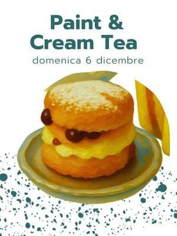
dom6dicPitturaPaint & Cream Tea: Victorian Puzzle Pursedomenica 6 dicembre, 16:00–19:00Torino · 40 €con Laura Raduazzo per Smith’s British dom6dicPitturaPaint & sip: un quadro con un drinkda domenica 6 dicembre a domenica 20 dicembre, 20:00–22:00San Salvario (TO) · 25 €con CamPaint
dom6dicPitturaPaint & sip: un quadro con un drinkda domenica 6 dicembre a domenica 20 dicembre, 20:00–22:00San Salvario (TO) · 25 €con CamPaint gio10dicPitturaLab frasygiuste: dipingi la tua frasegiovedì 10 dicembre, 20:00–21:30Verzuolo (CN)con Frasygiuste per Azienda Agricola Giolitti
gio10dicPitturaLab frasygiuste: dipingi la tua frasegiovedì 10 dicembre, 20:00–21:30Verzuolo (CN)con Frasygiuste per Azienda Agricola Giolitti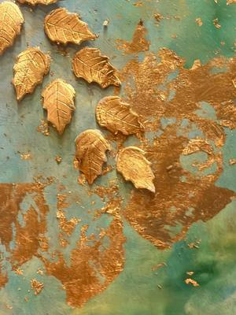
sab12dicPitturaRituale d’arte: colori, foglia oro e materiasabato 12 dicembre, 17:00Borgomanero (NO) · 49 €con Atelier di Melissa per Creo Workshop- dom13dicPitturaWorkshop di acquerello: biglietti di Nataledomenica 13 dicembre, 10:00Borgomanero (NO) · 39 €con Alessia Pezzimenti per Creo Workshop
- mar15dicPitturaWorkshop di acquerello: biglietti di Natalemartedì 15 dicembre, 18:30–20:30Mondovì (CN) · 20 €con Cooperativa Il Melograno
 gio17dicPitturaWorkshop di pirografia: decorazione in legnogiovedì 17 dicembre, 18:30Borgomanero (NO) · 30 €con Aeternum per Creo Workshop
gio17dicPitturaWorkshop di pirografia: decorazione in legnogiovedì 17 dicembre, 18:30Borgomanero (NO) · 30 €con Aeternum per Creo Workshop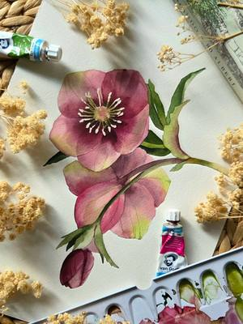
dom17genPitturaWorkshop di acquerello: l’elleborodomenica 17 gennaio, 10:00–13:00San Salvario (TO) · 65 €con Jasmine Watercolors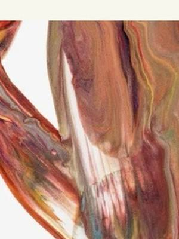
dal5febPitturaCorso di pittura e meditazione: spegni il rumoreda venerdì 5 febbraio a venerdì 5 marzo, ogni venerdì, 19:00–20:30Cuneo (CN) · 100 €con Michele Bruna per Sclab dal11febPer famiglieCorso di illustrazione sonora: musica e immaginida giovedì 11 febbraio a giovedì 11 marzo, ogni giovedì, 17:00–18:30Cuneo (CN) · 100 €con Francesca Veglio per Sclab
dal11febPer famiglieCorso di illustrazione sonora: musica e immaginida giovedì 11 febbraio a giovedì 11 marzo, ogni giovedì, 17:00–18:30Cuneo (CN) · 100 €con Francesca Veglio per Sclab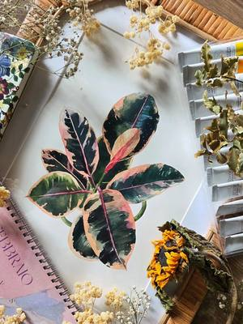
dom14febPitturaWorkshop di acquerello: il ficus elasticadomenica 14 febbraio, 10:00–13:00San Salvario (TO) · 65 €con Jasmine Watercolors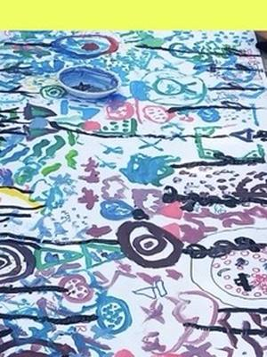
dal31marPer famiglieCorso d’arte: i grandi artisti per bambinida mercoledì 31 marzo a mercoledì 28 aprile, ogni mercoledì, 16:30–18:00Cuneo (CN) · 100 €con Francesca Veglio per Sclab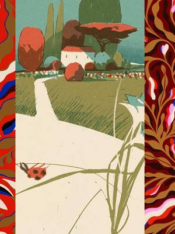
dal29lugPitturaCronache dal Giardino: disegno botanicoda giovedì 29 luglio a domenica 1 agosto, 18:30Lingotto (TO) · 450 €con Riccardo Guasco e Giovanna Giuliano per Print Club Torino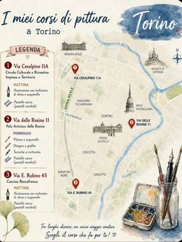
datada definirePitturaCorsi di disegno e pittura: china e pastelloData da definireTorinocon Barbara Sirtoli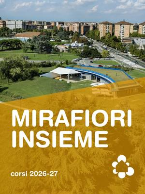
datada definirePitturaCorso di pittura: porcellana e stoffaData da definireMirafiori (TO)con Emilia Cerrato per Casa nel Parco datada definireAltroCascina Roccafranca: corsi della stagioneData da definireMirafiori (TO)con Cascina Roccafranca
datada definireAltroCascina Roccafranca: corsi della stagioneData da definireMirafiori (TO)con Cascina Roccafranca dataa sceltaPitturaPalestra creativa: arte per adultiData a sceltaTorino · 30 € a lezionecon Kreative Club
dataa sceltaPitturaPalestra creativa: arte per adultiData a sceltaTorino · 30 € a lezionecon Kreative Club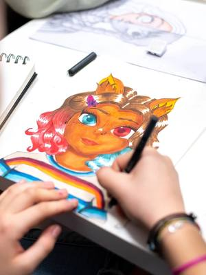
dataa sceltaPitturaCorso di urban sketching: disegnare la cittàData a sceltaTorino · 129 € per 6 lezionicon Kreative Club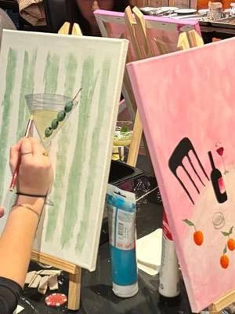
dataa sceltaPitturaPittura acrilica con drink in serraData a sceltaCampidoglio (TO) · da 55 €con Luzzi B dataa sceltaAltroTappezzeria e restyling: pouf e mobiliData a sceltaBarriera di Milano (TO) · da 20 €con Magazzini Tessili
dataa sceltaAltroTappezzeria e restyling: pouf e mobiliData a sceltaBarriera di Milano (TO) · da 20 €con Magazzini Tessili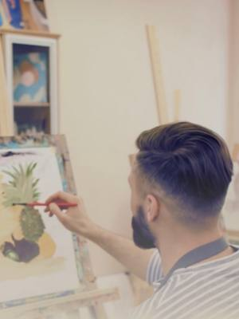
ognimarPitturaImpara a dipingere: corso di pittura a olioOgni martedìMondovì (CN)con Dalid Baez per Museo Della Casa datada definirePitturaNovel Academy: corsi di disegno e pitturaData da definireTorinocon Novel Academy
datada definirePitturaNovel Academy: corsi di disegno e pitturaData da definireTorinocon Novel Academy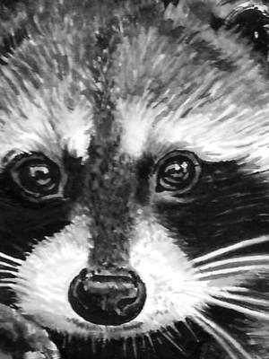
datada definirePitturaCorsi di disegno: grafite, pastello e chinaData da definireCentro (TO)con Barbara Sirtoli per Polo Le Rosine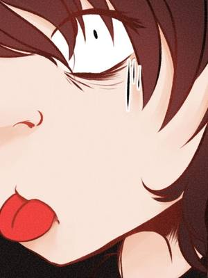
datada definirePitturaCorso di disegno manga: il tuo personaggioData da definireCentro (TO)con Alice Molinaro per Polo Le Rosine datada definirePitturaWorkshop di manga: storie e fumettiData da definireCentro (TO)con Wada Shinobu per Polo Le Rosine
datada definirePitturaWorkshop di manga: storie e fumettiData da definireCentro (TO)con Wada Shinobu per Polo Le Rosine dataa sceltaPitturaCorso di pittura: su porcellanaData a sceltaCit Turin (TO)con Scialabà
dataa sceltaPitturaCorso di pittura: su porcellanaData a sceltaCit Turin (TO)con Scialabà datada definirePitturaCorsi di disegno e pittura: lezione di provaData da definireCollegno (TO)con Soqquadro
datada definirePitturaCorsi di disegno e pittura: lezione di provaData da definireCollegno (TO)con Soqquadro- datada definirePitturaCorso di fumetto: dai personaggi alla storiaData da definireCollegno (TO)con Giorgio Sommacal e Claudio Taurisano per Soqquadro
 ognilunPitturaPittura antroposofica: colore e acquaOgni lunedìGrugliasco (TO) · 15 € a incontrocon Alessandra per Spazio Elastico
ognilunPitturaPittura antroposofica: colore e acquaOgni lunedìGrugliasco (TO) · 15 € a incontrocon Alessandra per Spazio Elastico ognimerPitturaCorso d’arte in inglese: per ogni etàOgni mercoledì, 15:00–16:30Cuneo (CN) · 180 € per 6 lezionicon Chantal per Atelier Crea-Arti
ognimerPitturaCorso d’arte in inglese: per ogni etàOgni mercoledì, 15:00–16:30Cuneo (CN) · 180 € per 6 lezionicon Chantal per Atelier Crea-Arti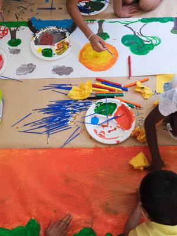
ognilunPer famiglieUn passo alla volta: cartoni animati per bambiniOgni lunedì, 16:30–18:30Aurora (TO) · 30 € al mesecon Luna Clara Ronco per Cecchi Point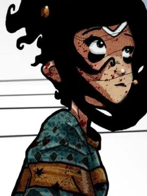
ognimarPitturaCorso di fumetto: personaggi e storieOgni martedì, 17:00–20:00San Mauro Torinese (TO)con Lorenzo Balocco per upTOyou- ognivenPitturaPercorso artistico: disegno e pitturaOgni venerdì, 17:00–19:00San Mauro Torinese (TO)con upTOyou
- ognivenPitturaCorso di pittura: olio e grandi maestriOgni venerdì, 18:00–20:00Centro (TO) · 100 € per 4 lezionicon Mery Rigo per Polo Le Rosine
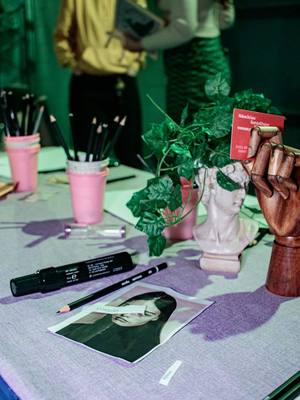
dataa sceltaPitturaClub di Disegno: illustrazione liberaOgni 2 mercoledì, 19:00–20:30Barriera di Milano (TO) · 15 € a lezionecon Malena De Luca per Bunker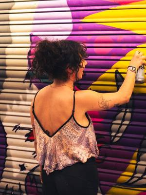
ognilunPitturaCorso di graffiti: writing urbanoOgni lunedì, 19:00–20:30Barriera di Milano (TO) · 20 € a lezionecon Nikka per Bunker